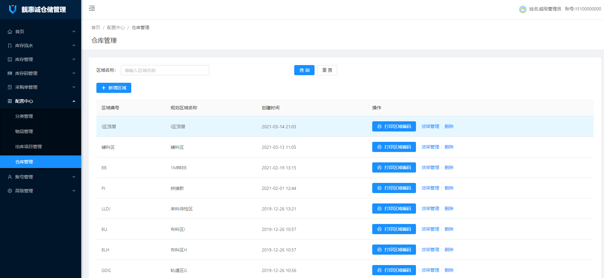
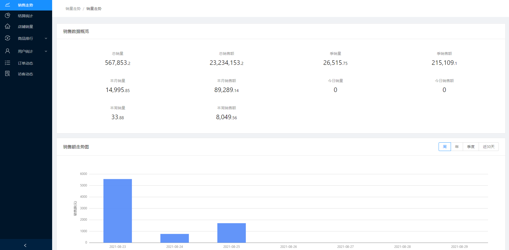
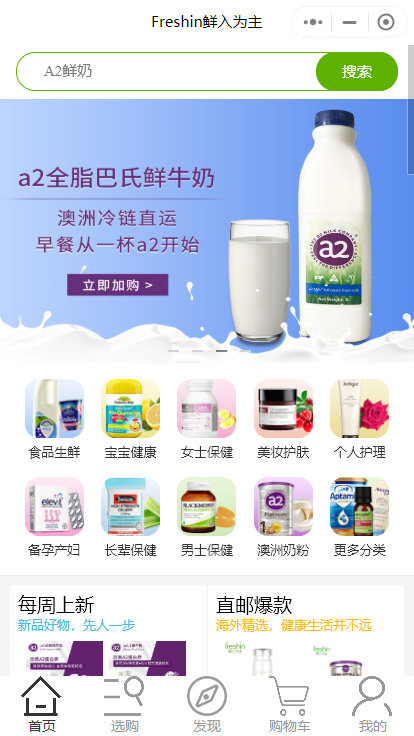
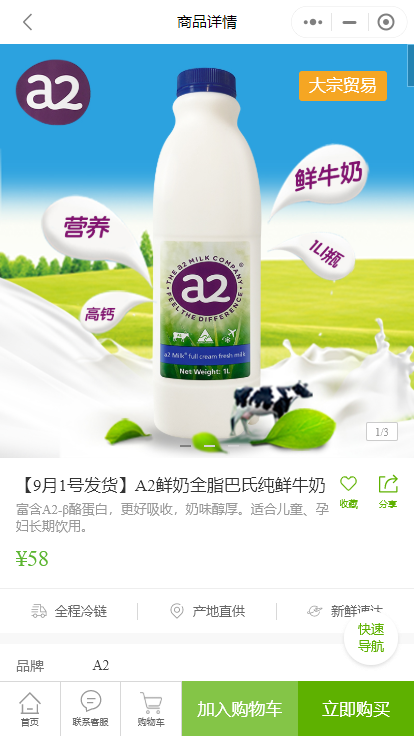
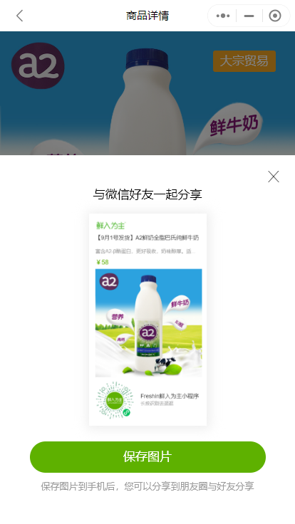
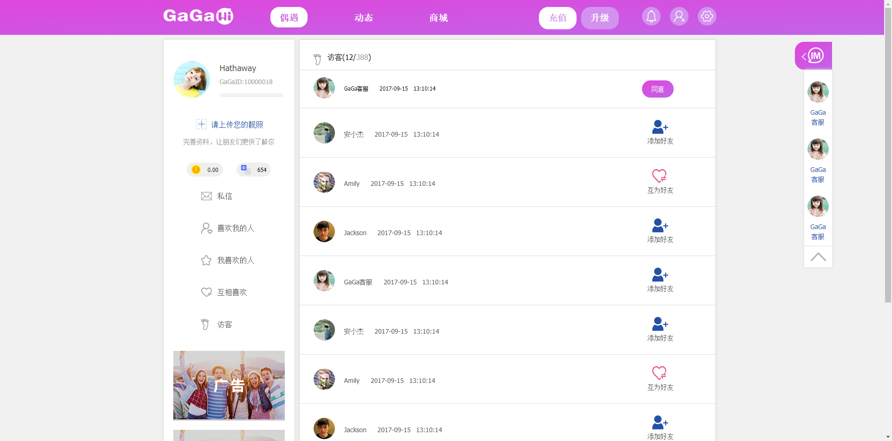
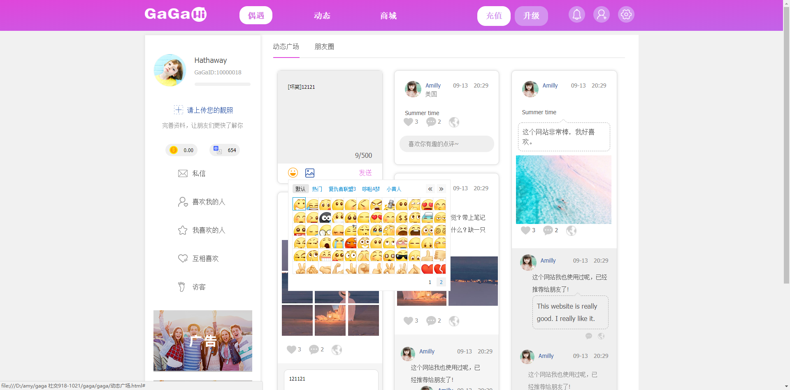

-
- Basic info. 基本信息
- 姓名: Ada Wu
- 工作年限: 2017.9~至今
-
- Experience. 工作与项目经验
杭州思发路网络科技有限公司（2019.9 - 至今）
-
安服宝后台管理（2019.9~2019.11）
项目介绍：该项目是安服宝APP的后台管理系统。安服宝后台管理主要功能有管理安装工、派单信息、安装工工具商城、安服宝APP端推送文章的编写和管理。
项目架构：后端：Spring-Boot、前端： Vue.js 和 Ant Design Vue / vue-quill-editor 组件库。
个人工作：
- 1、整个项目前端框架的搭建和编写
-
靓惠诚仓储系统后台管理（2019.11~2019.12）
项目介绍：该项目是由仓库管理员使用，辅助仓库进行仓库分区、物品规格管理、记录物品出入库的后台管理系统。主要核心功能包括：
- 1、库存管理（查看库存商品、出入库流水、商品流转信息等）
- 2、采购单、出库单管理（创建采购单进货、创建出库单发货、可导出为excel表）
- 3、配置中心（物品规格管理、仓库管理）；
- 4、权限管理（功能权限、角色权限）
项目架构： 后端：Spring-Boot；前端：Vue.js、Ant-Design Vue.js / ES6 / Axios 、LODOP打印。
个人工作：
- 1、整个项目前端框架的搭建和编写
- 2、将在线表格打印为excel、通过LODOP插件将仓库编码打印为包含物品规格信息和位置信息的面单
- 3、不同角色身份做了权限管理
-
靓惠诚数据可视化后台（2020.06~2020.08）
项目介绍：该项目的主要功能是用可视化的方式展示公司各级门店的销售情况、销售走势、销售排行、会员关系等。
项目架构：后端：Spring-Boot、前端： Vue.js 和 AntV / Echarts 组件库。
个人工作：
- 1、公用组件、函数的封装和完善工作；
- 2、将各类数据用合适的组件（柱状图、表格、饼图、树图、矩形树图）展示
杭州鲜入为主网络科技有限公司（2018.05 - 2019.07）
-
Freshin鲜入为主官方旗舰店小程序(2018.05 - 2018.12)
项目介绍：该项目是一个鲜入为主的自营小程序商城，让用户方便地购买海外直邮的商品。主要有：商品检索、选购商品、分享商品海报等功能。
项目架构： 后端：java、前端：WeUI框架。
   -
Freshin鲜入为主联盟小程序(2018.09 - 2019.07)
项目介绍：该项目是鲜入为主品牌旗下的分销商平台，为分销商提供商品推荐、分享、数据分析等工具，目标让分销商 提升效率，方便管理。
项目架构：后端：java、前端：WeUI框架和Echarts组件库。
杭州艾米网络科技有限公司（2017.03 - 2018.05）
-
GaGaHi(2017.11-2018.01)
项目介绍：该项目是一个集聊天、娱乐、社交为一体的社交平台，有商城购物、在线聊天和朋友圈动态等功能。
项目架构： 后端：php、前端：原生JavaScript/CSS/HTML/Ajax。
负责部分：整个项目前端框架的搭建和编写
 
-
API For BIM（2017.11 - 2017.12）源代码
项目介绍：该项目是一个风格简洁的文档搜索类网站。
项目架构： 后端：php、前端：原生JavaScript/CSS/HTML。
负责部分：整个项目前端框架的搭建和编写

-
多学科远程会诊平台（2017.09 - 2017.11）源代码
项目介绍：该项目是一个医院的后台管理系统、主要有登记病例、编辑病例信息、搜索用户等功能。
项目架构： 后端：php、前端：原生JavaScript/CSS/HTML。
负责部分：整个项目前端框架的搭建和编写


-
- Skill. 技能清单
前端
-
HTML / HTML5 / CSS / CSS3 / JavaScript
1、熟练掌握JavaScript（ES5、ES6）、TypeScript、HTML、CSS等前端开发要素，能编写语义化的、复合W3C规范的代码。
2、拥有4年的实际项目开发经验，具备多端、响应式开发的能力。
-
框架 / 组件库
1、对于主流框架Vue.js（主要方向）有多个项目开发经验，能够胜任框架搭建、公共函数和组件的封装。
2、熟练运用 Ant-design、Element 脚手架, jQuery 类库、bootStrap 框架和移动端 uniapp、 Ionic3、Vux 架构，对第三方插件如 Echarts、AntV等有一定的使用经验
-
其他
1、熟悉项目的性能优化，熟悉 git 正常工作流，能够熟练的运用 git进行分支合并、冲突解决、代码协同等操作。

Ada Wu'resume
-
- Contact. 联系方式
- 微信: 1289800193
-
- Application. 应聘岗位
- web前端
我是一个对前端由衷热爱、有趣的前端工程师。
目前正在寻找前端工程师岗位的工作机会，希望借此为贵公司献上我的一点绵薄之力，快招我到碗里来吧！